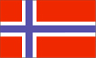

{kind=link}


![[Country map of Svalbard]](../maps/sv-map.jpg)
| Svalbard |
 |
|
| | |
| Introduction |
Background: First discovered by the Norwegians in the 12th century, the islands served as an international whaling base during the 17th and 18th centuries. Norway's sovereignty was recognized in 1920; five years later it officially took over the territory.
| Geography |
Location: Northern Europe, islands between the Arctic Ocean, Barents Sea, Greenland Sea, and Norwegian Sea, north of Norway
Geographic coordinates: 78 00 N, 20 00 E
Map references: Arctic Region
Area:
total:
62,049 sq km
land:
62,049 sq km
water:
0 sq km
note:
includes Spitsbergen and Bjornoya (Bear Island)
Area - comparative: slightly smaller than West Virginia
Land boundaries: 0 km
Coastline: 3,587 km
Maritime claims:
exclusive fishing zone:
200 nm unilaterally claimed by Norway but not recognized by Russia
territorial sea:
4 nm
Climate: arctic, tempered by warm North Atlantic Current; cool summers, cold winters; North Atlantic Current flows along west and north coasts of Spitsbergen, keeping water open and navigable most of the year
Terrain: wild, rugged mountains; much of high land ice covered; west coast clear of ice about one-half of the year; fjords along west and north coasts
Elevation extremes:
lowest point:
Arctic Ocean 0 m
highest point:
Newtontoppen 1,717 m
Natural resources: coal, copper, iron ore, phosphate, zinc, wildlife, fish
Land use:
arable land:
0%
permanent crops:
0%
permanent pastures:
0%
forests and woodland:
0%
other:
100% (no trees and the only bushes are crowberry and cloudberry)
Irrigated land: NA sq km
Natural hazards: ice floes often block up the entrance to Bellsund (a transit point for coal export) on the west coast and occasionally make parts of the northeastern coast inaccessible to maritime traffic
Environment - current issues: NA
Geography - note: northernmost part of the Kingdom of Norway; consists of nine main islands; glaciers and snowfields cover 60% of the total area
| People |
Population: 2,416 (July 2000 est.)
Age structure:
0-14 years:
NA
15-64 years:
NA
65 years and over:
NA
Population growth rate: -3.55% (2000 est.)
Birth rate: NA births/1,000 population
Death rate: NA deaths/1,000 population
Net migration rate: NA migrant(s)/1,000 population
Infant mortality rate: NA deaths/1,000 live births
Life expectancy at birth:
total population:
NA years
male:
NA years
female:
NA years
Total fertility rate: NA children born/woman
Ethnic groups: Russian and Ukrainian 62%, Norwegian 38%, other NEGL% (1994)
Languages: Russian, Norwegian
| Government |
Country name:
conventional long form:
none
conventional short form:
Svalbard (sometimes referred to as Spitzbergen)
Data code: SV
Dependency status: territory of Norway; administered by the Ministry of Industry, Oslo, through a governor (sysselmann) residing in Longyearbyen, Spitsbergen; by treaty (9 February 1920) sovereignty was given to Norway
Government type: NA
Capital: Longyearbyen
Independence: none (territory of Norway)
National holiday: NA
Legal system: NA
Executive branch:
chief of state:
King HARALD V of Norway (since 17 January 1991)
head of government:
Governor Morten RUUD (since NA November 1998) and Assistant Governor Rune Baard HANSEN (since NA 1996)
elections:
none; the monarch is hereditary; governor and assistant governor responsible to the Polar Department of the Ministry of Justice
International organization participation: none
Flag description: the flag of Norway is used
| Economy |
Economy - overview: Coal mining is the major economic activity on Svalbard. The treaty of 9 February 1920 gives the 41 signatories equal rights to exploit mineral deposits, subject to Norwegian regulation. Although US, UK, Dutch, and Swedish coal companies have mined in the past, the only companies still mining are Norwegian and Russian. The settlements on Svalbard are essentially company towns. The Norwegian state-owned coal company employs nearly 60% of the Norwegian population on the island, runs many of the local services, and provides most of the local infrastructure. There is also some trapping of seal, polar bear, fox, and walrus.
GDP: $NA
GDP - real growth rate: NA%
GDP - per capita: $NA
Population below poverty line: NA%
Household income or consumption by percentage share:
lowest 10%:
NA%
highest 10%:
NA%
Inflation rate (consumer prices): NA%
Labor force: NA
Budget:
revenues:
$11.7 million
expenditures:
$11.7 million, including capital expenditures of $NA (1997 est.)
Industrial production growth rate: NA%
Electricity - production: NA kWh
Electricity - production by source:
fossil fuel:
NA%
hydro:
NA%
nuclear:
NA%
other:
NA%
Electricity - consumption: NA kWh
Electricity - exports: NA kWh
Electricity - imports: NA kWh
Exports: $NA
Imports: $NA
Economic aid - recipient: $8.7 million from Norway (1997)
Currency: 1 Norwegian krone (NKr) = 100 oere
Exchange rates: Norwegian kroner (NKr) per US$1 - 8.0129 (January 2000), 7.7992 (1999), 7.5451 (1998), 7.0734 (1997), 6.4498 (1996), 6.3352 (1995)
| Communications |
Telephones - main lines in use: NA
Telephones - mobile cellular: NA
Telephone system:
domestic:
local telephone service
international:
satellite earth station - 1 of NA type (for communication with Norwegian mainland only)
Radio broadcast stations: AM 1, FM 1 (plus 2 repeaters), shortwave 0 (1998)
Radios: NA
Television broadcast stations: NA
Televisions: NA
Internet Service Providers (ISPs): NA
| Transportation |
Railways: 0 km
Highways:
total:
NA km
paved:
NA km
unpaved:
NA km
Ports and harbors: Barentsburg, Longyearbyen, Ny-Alesund, Pyramiden
Merchant marine: none (1999 est.)
Airports: 4 (1999 est.)
Airports - with paved runways:
total:
1
1,524 to 2,437 m:
1 (1999 est.)
Airports - with unpaved runways:
total:
3
under 914 m:
3 (1999 est.)
| Military |
Military - note: demilitarized by treaty (9 February 1920)